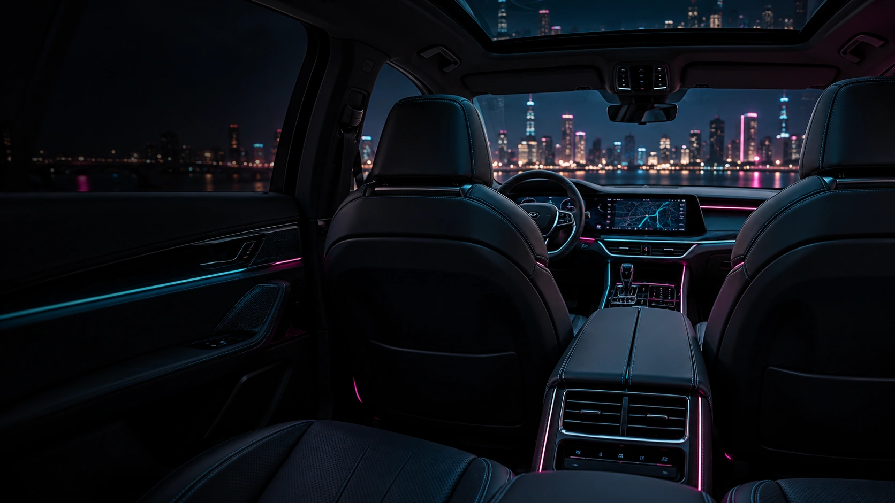
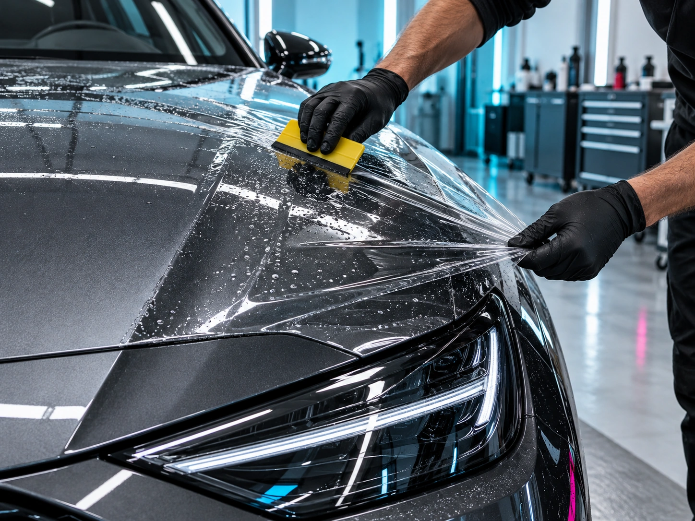
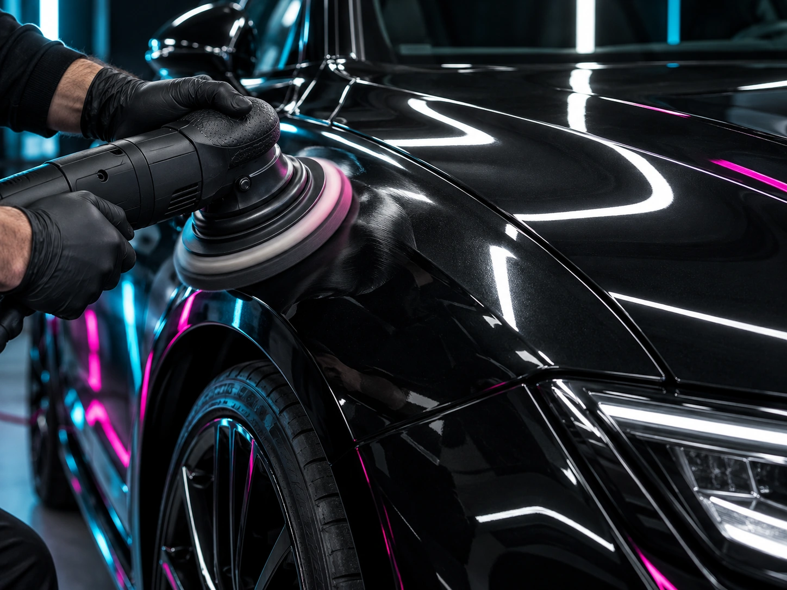
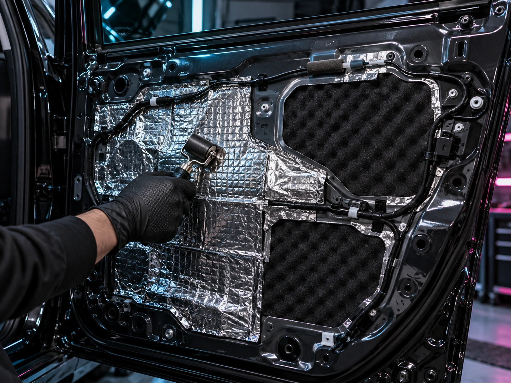
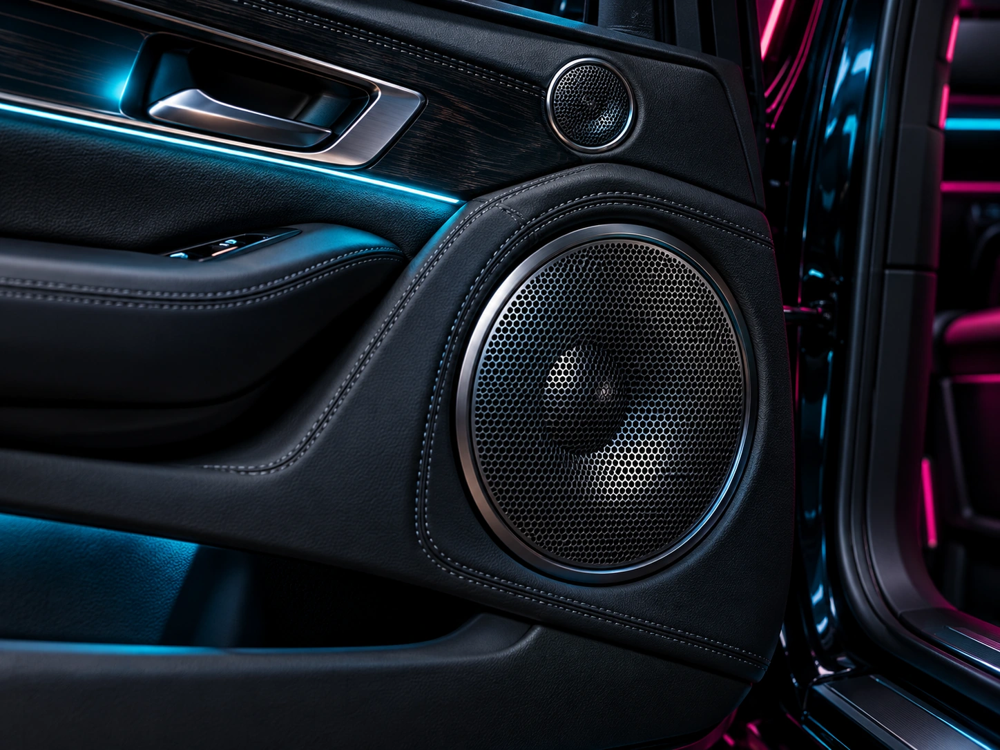
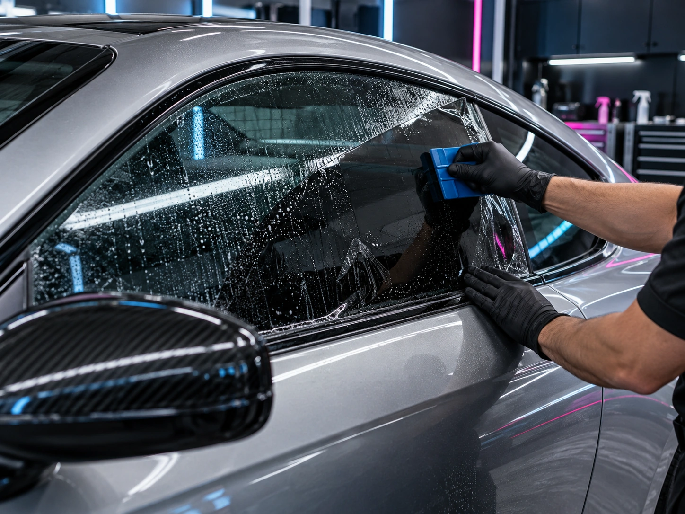

Демонстрационная автостудия
Ночь. Свет.
Ваш автомобиль.
Контурная подсветка, оклейка и детейлинг. Соберите свой вариант обновления автомобиля.
Обсудить проект Посмотреть фотографииNOCHE GARAGE
Атмосфера
внутри
Контурная подсветка подчёркивает линии салона. Звёздное небо добавляет свет на потолке. Выберите, что ближе вашему автомобилю.
Контурная подсветка
Двери, передняя панель, консоль и зона ног. Состав установки обсудим под вашу модель.
Звёздное небо
Точечный свет в обивке потолка. Цвет, плотность и варианты управления уточняются при подборе.
Все изображения созданы ИИ для этого концепта. Они иллюстрируют направления услуг и не являются фотографиями выполненных заказов.
Не только
подсветка
Внешний вид, комфорт и мультимедиа. Выберите направление, чтобы добавить его в запрос мастеру.





Оклейка и антихром. Иллюстрация создана ИИ.
Оклейка и антихром
Защитная и виниловая плёнка, бронирование фар и оклейка хромированных элементов. Зоны защиты и материал подбираются под задачу.
Полировка и керамика
Полировка кузова и нанесение керамического покрытия. Объём подготовки зависит от состояния лакокрасочного покрытия.
Шумоизоляция
Обработка дверей, арок, пола и других зон. Можно обсудить отдельный участок или комплексную работу.
Автозвук и мультимедиа
Установка магнитол, акустики, камер и видеорегистраторов. Совместимость оборудования проверяется под конкретный автомобиль.
Тонировка и PDR
Тонировка стёкол и удаление вмятин без покраски. Возможность и состав работ определяются после осмотра.
С чего
начнём?
Укажите автомобиль и выберите услуги. Подготовим текст, который вы сможете самостоятельно отправить мастеру в Telegram.
Ваш запрос мастеру
Форма работает только в браузере. Данные не отправляются и не сохраняются. Для обращения скопируйте текст и отправьте его самостоятельно.
О концепции
Все работы автора ↗Noche Garage - вымышленная автостудия.
Сайт демонстрирует подбор услуг, просмотр изображений и подготовку текста заявки. Данные остаются в браузере. Заявки не отправляются.
Название используется для демонстрации. Фотографии созданы ИИ с нуля и не показывают работы реальной студии.